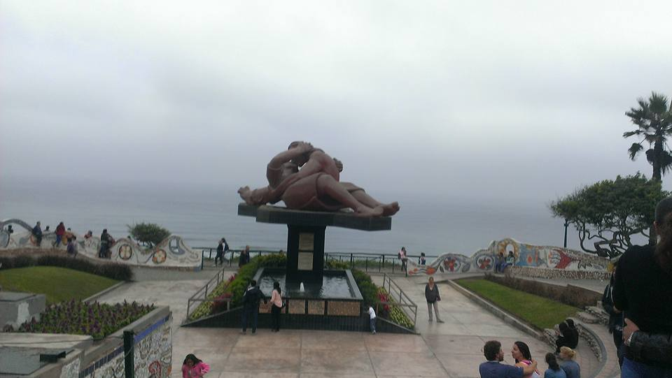
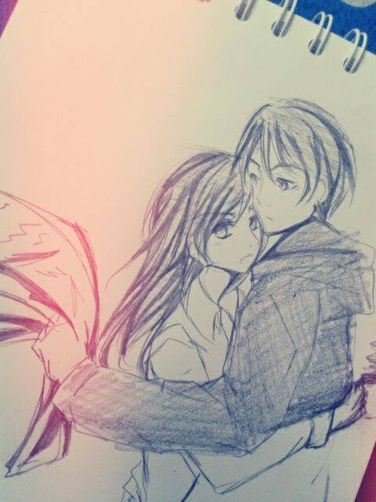
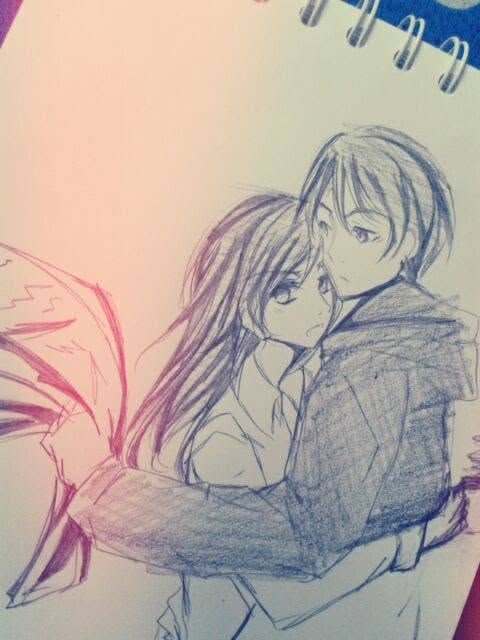
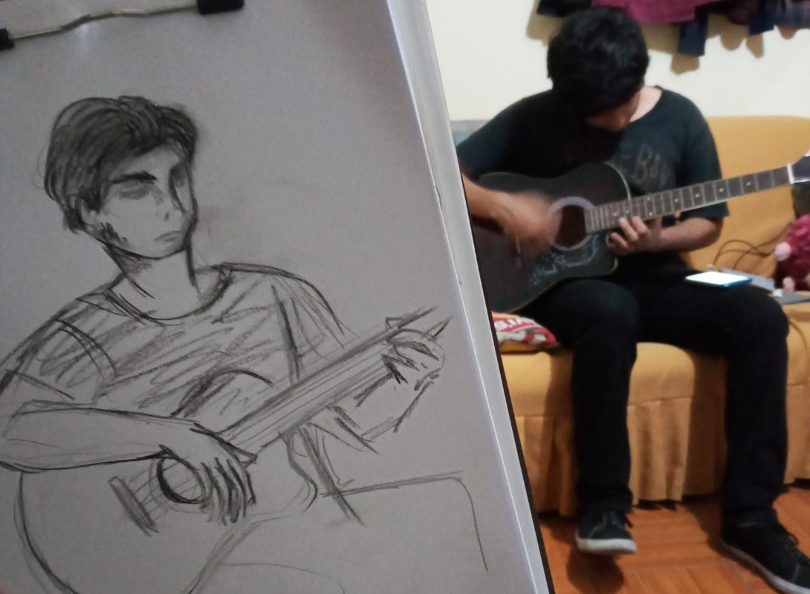
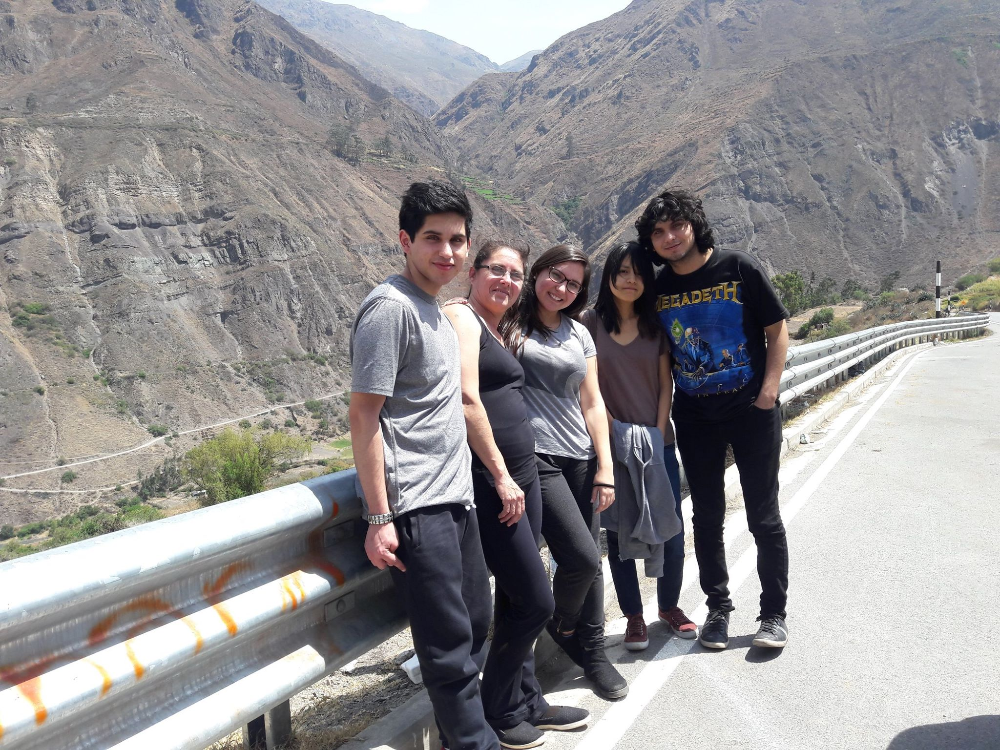
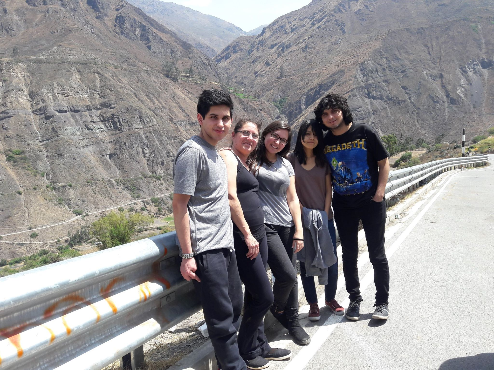
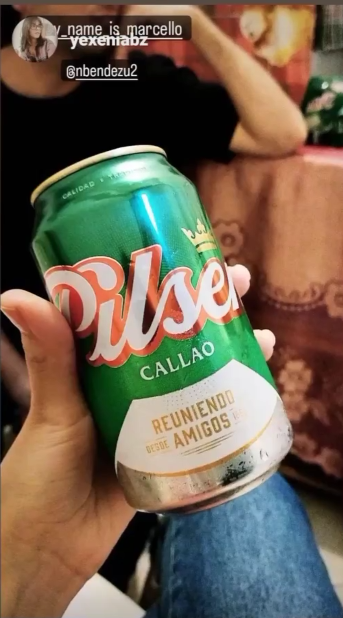

¡Feliz cumpleaños Yexi!
Quería darte este regalo, ya que no hay otra cosa que pueda darte.
No tengo muchas imágenes ni tampoco muchas cosas que pueda decirte,
pero espero que al menos pueda servirme esto de despedida.
Comencemos por aquí, este regalo fue algo muy especial para mí.
Nunca me sentí tan especial, como para que alguien me diera un regalo.
Me hiciste sentir importante y especial.
Esta foto fue de aquella vez que caminamos desde Tottus hasta Miraflores y llegamos al parque del amor. Para mí fue la primera vez que visité ese lugar, fue muy especial.
Tus regalos más especiales para mí fueron tus dibujos. Siempre los amé.
 

Recuerdo cuando tocaba en tu cuarto, y cuando vivímos juntos, tocaba en la sala. Sentir que me escuchabas me hizo feliz. Muchas gracias por tu cariño.
Fue especial cuando me acompañaste a Canta con mi familia. Nunca hice algo así. Comenzaste a hacerte una parte aún más especial de mi vida.
 

Tuvimos momentos buenos, momentos malos. Pasamos muchas cosas juntos.
Este recuerdo escuchando música en tu cuarto y tomando chelita.
Esta foto me recuerda uno de los momentos más difíciles y bajos que
enfrenté en mi vida.
A pesar de todo, me diste otra oportunidad y me sentí vivo de nuevo.
Luego de ese momento difícil, comenzamos a convivir, nos conocimos mejor y pasamos momentos muy buenos. Este es un recuerdo de aquellos días en los que íbamos a casa de tu mamá y tomábamos chelita escuchando música.

Ya, en estos momentos, sin tí, me siento como un fantasma que regresa
sobre sus propios pasos.
Los lugares importantes, los lugares especiales... aquellos lugares
por los que pasamos juntos.
Por último, me queda este recuerdo en el que más tarde, ese mismo día,
tus palabras me quedarían grabadas en la piel.
"Haría cualquier cosa por tí, no seas tonto".
Algún día estaré a la altura de tus palabras.
Tengo tantas cosas que quiero decirte, tanto que quiero demostrarte, pero no es el momento, ya tal vez no hay oportunidad. No lo sé, no puedo ver el futuro...
Lo que si tengo claro es que debo aprender a no depender de nadie y si elijo compartir mi vida, debe ser por amor y no por dependencia emocional.
A pesar que me duela, que sea difícil y que llore con mucho dolor, siempre debo elegirme a mí y mi bienestar.
Hablándo con el psicólogo, me preguntó que si tú decidieras volver conmigo pero poniéndome condiciones, ¿qué estaría dispuesto a hacer?.
En ese momento mi corazón resucitó, me volvió el alma al cuerpo y respondí en instantáneo... "Haría cualquier cosa que me pida, lo que sea."
En estos momentos tú ya decidiste, ya elegiste y sé que lo que has elegido es lo correcto.
Tuve mucha suerte de toparme contigo, porque tú me amaste, me quisiste con todas tus fuerzas, diste todo por mí y elegiste hacer hasta lo imposible para que nuestra relación sobreviva.
Tuve suerte de tenerte porque vales demasiado y te mereces muchas cosas buenas, te mereces lo mejor de la vida. Te mereces el amor que me diste y no el amor incompleto y roto que te dí.
Si bien tengo muchas cosas que ocultaba y muchos traumas y problemas que me llevaron a actuar mal, la verdad es que nadie me obligó, todo lo hice voluntariamente y eso duele mucho. Pude haber hablado, pude haber buscado hacer las cosas mejor, pero yo voluntariamente elegí lo peor siempre. Incluso ahora no pude dejarte ir fácil, lo hice muy difícil y te dañé más.
Te conozco, te conocí, sé qué te gusta, qué no te gusta y todo esto lo digo con total seguridad.
Seré el hombre correcto que debo ser y si me quedo solo, si vuelves conmigo o si me toca seguir con otra persona, prometo que haré las cosas de la manera correcta. Tal y como lo aprendí de tí.
No dejes tu terapia por favor. Come a tus horas y deja de picar tonterías que luego te quitan el hambre.
Cuidaré más mis dientes y dormiré temprano.
Ten cuidado cuando tiendas la ropa y no combines la ropa de color con la ropa blanca.